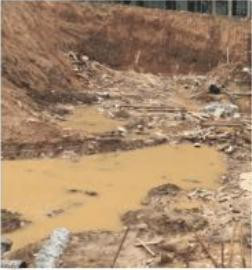

18、下图中，某工地正在进行土方开挖施工，土方开挖大部分开挖深度 3-4 米， 其他部分开挖深度 5-8 米，下列哪项描述是正确的?（ A ）
A.开挖深度超过 5 米，需编制专项施工方案，并组织专家论证 B.由于本工程施工技术复杂，土方开挖难度较大，土质差，因此在组织专家论证时，至少需 6 名专家参与论证，且技术专家必须 3 名以上 C.开挖深度超过 3 米，低于 5 米，且土质较好，可不作为危险性较大的分部分项工程范围 D.开挖深度超过 3 米，低于 5 米，可只编制专项施工方案，经项目技术负责人审核，项目经理及监理单位总监审批即可
